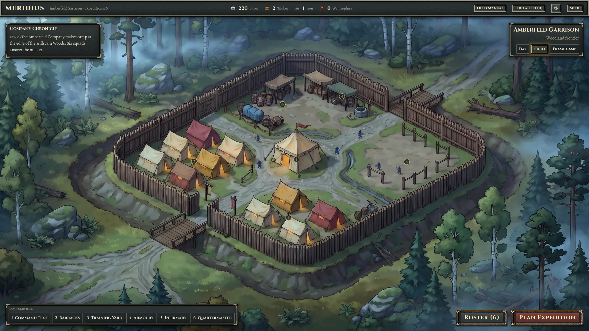
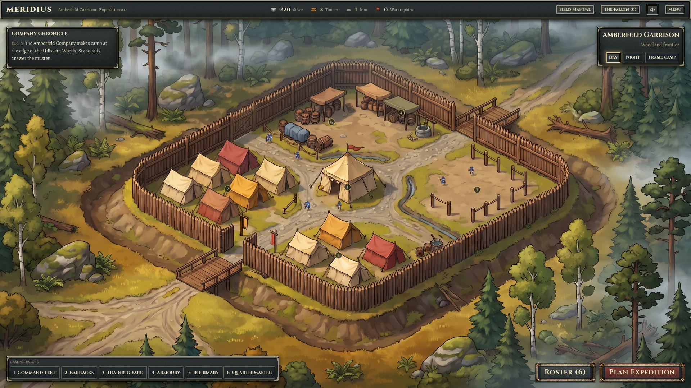
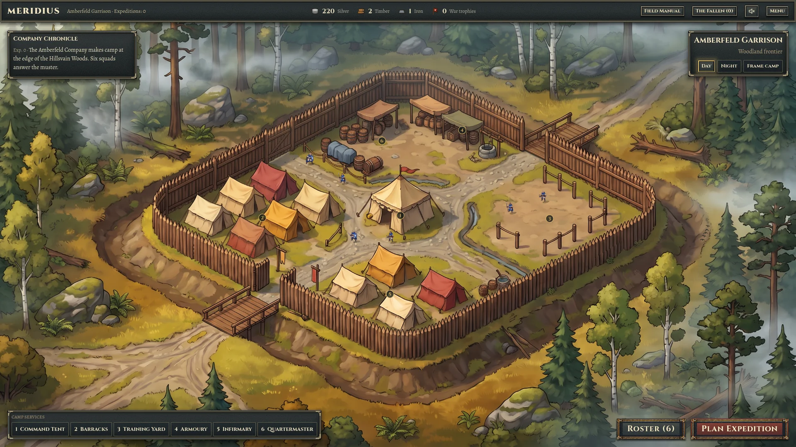
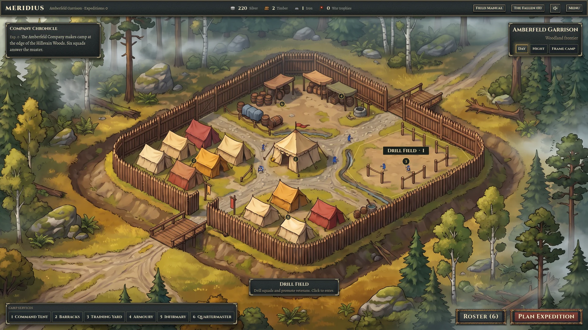
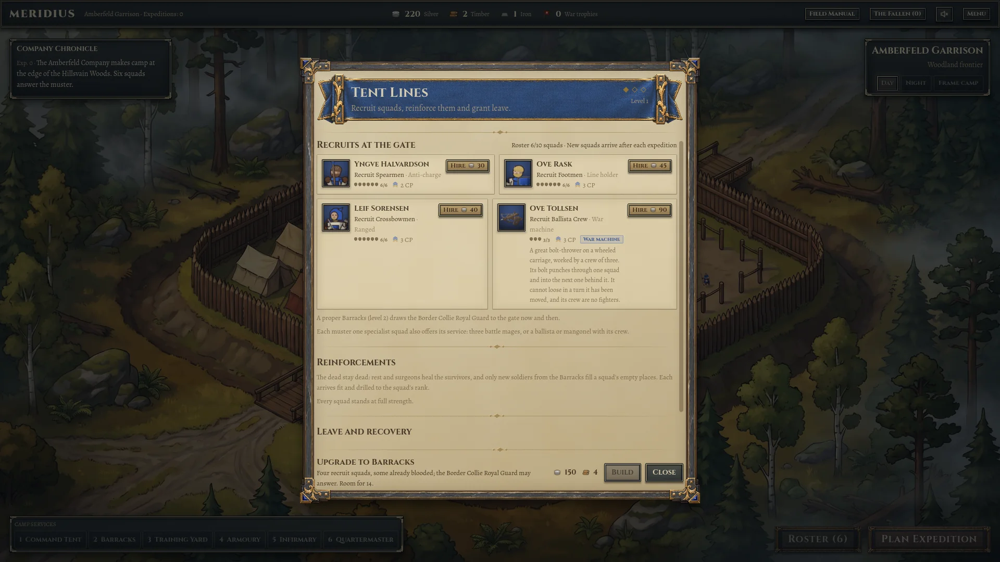
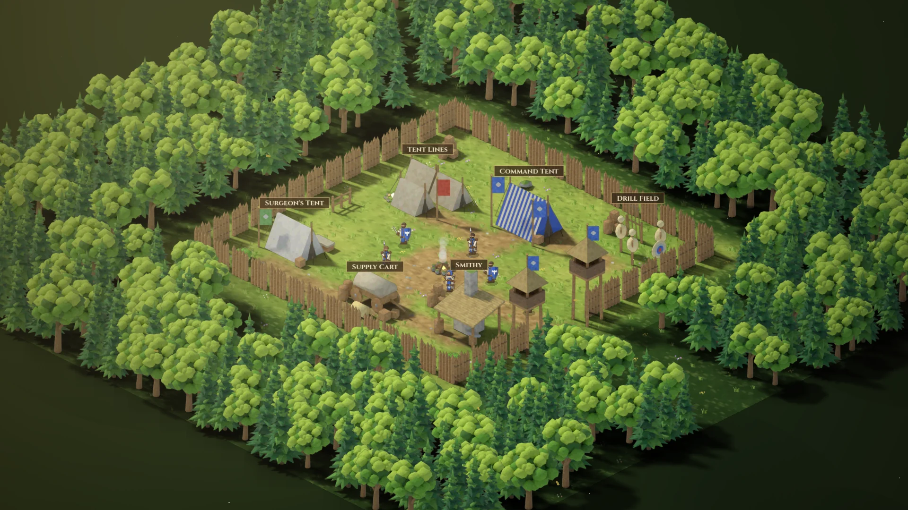
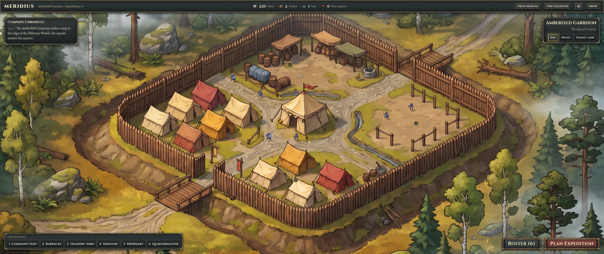

A home in the woodland
The first native implementation of the woodland camp turns the selected painting into the campaign’s starting place: a sheltered garrison, living company figures, quiet forest atmosphere and six working services.
The scene uses a painted stage at a fixed isometric angle. Pan and zoom explore the composition; daylight and moonlight are two views of the same camp. The existing roster, building panels and expedition flow remain connected to the game.

Atmosphere in motion
Two layers of uneven mist travel at different speeds through the existing forest fog. Local wind masks bend tree crowns above fixed roots, with quicker leaf flutter over the slower gusts. The palisade and occupied camp remain stable. Three surveyed treetops release small flocks, with staggered wingbeats, short glides and long quiet intervals between flights.




What is built
The new renderer preserves the painting’s architecture and ground. Shader mist moves through the woodland, soft light passes through the upper canopy, and warm tent light gently breathes at night. Existing roster figures follow authored routes across visible open ground. These routes are presentation paths, separate from battlefield navigation.
Six painted areas open the existing service panels. A compact service strip offers the same actions through keyboard-focusable buttons, with real building names and levels in their tooltips. The Chronicle starts with its latest entry; Roster and Plan Expedition remain the main company actions.




Six places to prepare
| Service | Place in the painting | Existing action |
|---|---|---|
| Command | Central command tent | Review command upgrades and army capacity. |
| Barracks | Western tent lines | Recruit, reinforce and grant leave. |
| Training | Eastern training ground | Drill squads and promote veterans. |
| Quartermaster | Rear-left supply area | Buy supplies and improve supply capacity. |
| Armoury | Rear-right service area | Buy and repair arms and armour. |
| Infirmary | Front tent group | Treat lasting injuries and review medical upgrades. |
Framing the camp
Use the mouse wheel to zoom and the existing camera controls to pan. The camera is bounded by the painting so it does not reveal empty space. Frame camp restores the opening composition; Day and Night select the lighting preview.




Selected artwork and editable sources
Day uses camp_small_woodland, take 02; night uses camp_small_woodland_night, take 01. Both originals are 2752 × 1536 PNGs, copied byte-for-byte into the Godot camp asset folder. SHA-256 checks match each engine asset to its selected original. This pass reuses the existing artwork; it adds no new generation.
- Bird roosts, flight paths and wing animation. The original paintings remain unchanged; all new motion is drawn by the engine.
- Selected day original (WebP copy) · Download · Engine copy.
- Selected night original (WebP copy) · Download · Engine copy.
- Camp renderer, hit areas and ground routes · Atmosphere shader · Camp HUD.
- Implementation notes · Provenance manifest · Native review source.


Coordinate and source contract
Authored facility anchors, hit polygons and figure routes use normalized image coordinates, starting at the top-left: x runs right, y runs down. The renderer multiplies them by the 2752 × 1536 image size. Engine world coordinates for this stage are source-image pixels. The renderer is the editable geometry source; the manifest links to it rather than duplicating its coordinates.
The previous base renderer is retained. Its baseline SHA-256 is EE2E97C7B67D6FAB3E50642E1C5ED60B9F58D37D237D76D7992FBD66CF79F825.
Verification and current limits
Audio capture corrected. Sound defaults to ON in the game and is ON in the saved preferences used for this recording. Both replacement MP4s contain stereo audio from Godot's Master bus; the players start unmuted. The earlier videos had no audio track. Audio verification.
Native review: 90 checks passed, no runtime errors, clean shutdown. All six painted facilities and their service buttons open the existing panels. The review also exercises hover, modal blocking, day/night, zoom, camera reset, Roster, Plan Expedition and return, plus a 2560 × 1080 desktop. The player's save is unchanged and preferences are restored. Interaction log · Capture record.
Latest quick suite: 408 passed, 0 failed, 11 skipped. Rerun for the audio correction. The earlier camp pass also recorded 35 focused regressions. Test summary.
Report checked at 1440 and 1000 desktop pixels, in dark and light themes. All eight image previews and downloads, source links, both videos and seeking work; no horizontal overflow or browser errors were found. Browser check record.
The buildings are painted into the stage and do not change appearance when upgraded. Actual building levels, costs and benefits remain visible through the live panels and tooltips. The fixed isometric painting does not provide rotating geometry or battlefield terrain. Armoury and Infirmary placement are interpretations of the concept; the game’s authoritative rules are unchanged.